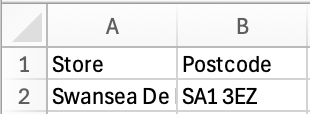

3 Geocodio a phoblogaeth
Dyddiad yr ymarfer: 16eg Hydref 2026
Mae lleoliad a dwysedd y boblogaeth ddynol yn sail i sut mae cymdeithas wedi’i threfnu. Mae GIS yn helpu i ddeall systemau dynol trwy gyfrifo pethau fel dwysedd poblogaeth, agosrwydd at nodweddion, a neilltuo data i gyfeiriadau. Yn y DU, mae codau post wedi’u datblygu fel ffordd o gysylltu gweithgaredd dynol â lleoliadau ffisegol er mwyn cynorthwyo llywodraethu. Mae’r ymarfer hwn yn archwilio sut y gellir defnyddio codau post i gasglu gwybodaeth ddefnyddiol ar lefel y boblogaeth, a sut y gellir defnyddio QGIS i echdynnu gwybodaeth - ychwanegiad gwerthfawr ar gyfer eich prosiect fferm wynt.
I archwilio dosbarthiad pwyntiau cod post yng Nghymru, archwilio dwysedd poblogaeth, geogodio nodweddion newydd ar fap, a chyfrif poblogaethau o fewn dalgylchoedd syml. Bydd y gallu i echdynnu gwybodaeth o ddata geo-ofodol yn hanfodol ar gyfer capsiynau eich map.
3.1 Archwilio lleoliadau cod post
Lansiwch QGIS a chreuwch prosiect newydd
Ychwanegwch yr haen
Wales_Principal_Areas.gpkgat eich prosiectYchwanegwch yr haen
Wales_headcounts_at_postcodes_2021.gpkgat eich prosiect. Mae’r set ddata hon yn cynnwys y nifer o dai a phobl sydd wedi’u cofrestru ym mhob cod post (cymerwyd o’r Cyfrifiad 2021), ynghyd â chyfesurynnau o OS OpenDataYmchwiliwch i’r attributes table ac archwiliwch sut mae’r pwyntiau hyn wedi’u dosbarthu
Gan ddefnyddio sgiliau o Ymarfer 1 (?sec-attrib) i ateb y canlynol:
Sawl person oedd yn byw yn y cod post â’r boblogaeth fwyaf yn ardal Caerdydd (CF) yn 2021? (peidiwch â defnyddio atalnodau)
Sawl person oedd yn byw yn y cod post â’r boblogaeth fwyaf yn ardal Abertawe (SA) yn 2021? (peidiwch â defnyddio atalnodau)
Sawl person oedd yn byw yn y cod post â’r boblogaeth fwyaf yn ardal Aberystwyth (SY) yn 2021? (peidiwch â defnyddio atalnodau)
- Y cod post â’r boblogaeth fwyaf yn ardal Caerdydd (CF35 6AP) yn 2021 oedd 1,593.
- Y cod post â’r boblogaeth fwyaf yn ardal Abertawe (SA1 8EN) yn 2021 oedd 1,922.
- Y cod post â’r boblogaeth fwyaf yn ardal Aberystwyth (SY23 3TE) yn 2021 oedd 820.
- Defnyddiwch Google Maps i chwilio am y codau post hyn i ateb y canlynol:
Pa nodwedd yn yr ardal cod post â’r boblogaeth fwyaf a esboniodd y nifer uchel o bobl?
Abertawe (SA):
Caerdydd (CF):
Aberystwyth (SY):
- SA1 8EN yw’r cod post ar gyfer llety myfyrwyr Campws y Bae, Prifysgol Abertawe.
- CF35 6AP yw’r cod post ar gyfer Carchar Parc EF ym Mhen-y-bont ar Ogwr.
- SY23 3TE yw’r cod post ar gyfer pentref myfyrwyr Penglais, Prifysgol Aberystwyth.
Cadwch eich prosiect!
-
Yn ogystal â gallu dosbarthu pwyntiau yn ôl categori o’r attributes table (fel y gwnaethoch chi yn Section 1.8), gellir graddio pwyntiau gan newidyn parhaus yn seiliedig ar faint neu liw. Gall hyn fod yn dechneg ddelweddu effeithiol iawn. I raddio yn ôl maint:
- Agorwch ffenestr
Symbologyyr haen headcounts - Defnyddiwch y cwymplen i newid ffynhonnell y symboleg o
Single SymboliGraduated - Gosodwch
ValueiTotal(h.y. poblogaeth y DU yn 2021) - Gosodwch
MethodiSize - Cliciwch
Classify→OK
- Agorwch ffenestr
3.2 Darganfod ystadegau headcount
-
Gweithrediad bwerus GIS yw gallu deillio gwybodaeth ystadegol o oll neu is-set o nodweddion mewn set ddata geo-ofodol. Mae hyn yn berthnasol i gyfrifo ystadegau o’ch teils map a lleoliad eich fferm wynt eich hun. I gyfrifo ystadegau ar headcounts fesul cod post:
- Cliciwch
Vector→Analysis Tools→Basic Statistics For Fields... - Gosodwch
Input layeri’r haenWales_headcounts_at_postcodes_2021.gpkg - Gosodwch
Field to calcualate statics oniTotal - Cliciwch
Run. Cyflwynir y canlyniadau o dan y tabLog, a gellir eu gweld yn yResults Viewerdrwy dwbl-glicio ar y gwrthrychStatistics report
- Cliciwch
Defnyddiwch
Basic Statistics For Fields...i ateb y canlynol:
Beth oedd poblogaeth gofrestredig Cymru yn 2021? (peidiwch â defnyddio atalnodau)
Beth oedd y newid canrannol ym mhoblogaeth Cymru rhwng 2011 a 2021?
- Roedd poblogaeth gofrestredig Cymru yn 2021 yn 3,107,400.
- Y newid canrannol ym mhoblogaeth Cymru rhwng 2011 a 2021 oedd 1%.
- Gobeithio eich bod wedi defnyddio
Wales_headcounts_at_postcodes_2011.gpkgi ateb yr ail gwestiwn! Os felly, cliciwch ar y dde ar haen cyfrif2011a chliciwchRemove Layer.... Mae’n arfer da gwaredu haenau ar ôl i chi orffen gyda nhw, er mwyn osgoi i’ch prosiect fynd yn rhy orlawn
3.3 Ystadegau yn ôl lleoliad
-
Cyfrifwch ystadegau sylfaenol ar is-set o ddata mewn lleoliad penodol:
- Dewiswch bolygon Sir Abertawe o
Wales_Principal_Areas(wedi anghofio sut i wneud hyn? Gwiriwch ?sec-attrib) - Cliciwch
Vector→Research Tools→Select By Location... - Gosodwch
Select features fromiWales_headcounts_at_postcodes_2021 - Ticiwch
are within - Gosodwch
By comparing to the features fromiWales_Principal_Areas - Ticiwch
Selected features only. Mae hyn yn sicrhau mai dim ond codau post yn Abertawe sy’n cael eu dewis - Cliciwch
Run - Os caiff ei wneud yn gywir, fe welwch fod pob canolbwynt cod post yn Sir Abertawe wedi’i ddewis (wedi’i amlygu’n felyn)
- Dewiswch bolygon Sir Abertawe o
Defnyddiwch yr offeryn
Basic Statistics For Fields...i ateb y canlynol (gwnewch yn siŵr bodSelected features onlywedi’i dicio y tro hwn):
Beth oedd cyfanswm poblogaeth Sir Abertawe yn 2021? (peidiwch â defnyddio atalnodau)
What was the total population of Cardiff county in 2021? (don’t use commas)
Beth oedd y newid canrannol ym mhoblogaeth Sir Abertawe rhwng 2011 a 2021? (peidiwch â defnyddio atalnodau)
- Cyfanswm poblogaeth Sir Abertawe yn 2021 oedd 238,447.
- Cyfanswm poblogaeth Sir Caerdydd yn 2021 oedd 362,356.
- Y newid canrannol ym mhoblogaeth Sir Abertawe rhwng 2011 a 2021 oedd -0.2.
3.4 Creu gresmap dwysedd poblogaeth
-
Mae gwresmap yn offeryn delweddu sy’n defnyddio ramp lliw i ddangos gwerthoedd neu dwysedd data gofodol ar ffurf raster gyda maint picsel penodol. Gall rhain grynhoi data pwynt yn effeithiol - efallai’n fwy effeithiol na graddio pwyntiau yn ôl maint. I greu gwresmap o ddwysedd poblogaeth yn Sir Abertawe:
- Cliciwch
Processing→Toolboxneu dewch o hyd i’r llwybr byr () - Cliciwch y saeth chwymplen wrth ymyl
Interpolation - Dwbl-gliciwch
Heatmap (Kernel Density Estimation) - Gosodwch
Point layeriWales_headcounts_at_postcodes_2021 - Ticiwch
Selected features only - Gosodwch
Radiusi500metr - Gosodwch
Pixel size XaPixel size Yi100metr - Gosodwch
Weight from fieldiTotal - Cliciwch
Run→Close
- Cliciwch
-
Arbrofwch gyda:
- Newid symboleg yr haen raster (gweler Section 2.5)
- Creu gwresmap newydd gan newid y
Radiusy tro hwn - Creu gwresmap newydd ar gyfer Cymru gyfan (Dad-diciwch
Selected features only..)
Wedi cadw eich prosiect yn ddiweddar?
3.5 Geocodio cyfeiriadau newydd
-
Geogodio yw’r broses o drosi cyfeiriad neu enw lle i gyfesurynnau daearyddol, fel lledred a hydred. Mae’n caniatáu i GIS blotio lleoliadau ar fap. Mae offeryn ‘trosi’ o’r fath unwaith eto yn weithrediad pwerus o GIS. Defnyddiwch geogodio i blotio ble mae siopau Tesco lleol Abertawe wedi’u lleoli:
- Llywiwch i’r Lleolydd siop Tesco
- Chwiliwch am siopau yn ardal ‘Abertawe’
- Agorwch
Excel - Llenwch daenlen gydag enw’r ‘Siop’ a’r ‘Cod Post’ ar gyfer y saith siop gyntaf o’r wefan
- Cadwch y daenlen mewn fformat
.csv(maeUTF-8yn iawn)

-
Nesaf, gosodwch ategyn penodol i wneud y geocodio. Mae ategion yn cael eu hysgrifennu gan ddatblygwyr QGIS a datblygwyr annibynnol eraill sydd eisiau ymestyn swyddogaeth graidd y feddalwedd. Yr arloesi hwn dan arweiniad y gymuned sy’n gwneud QGIS yn offeryn mor bwerus. I osod ategion:
- Dychwelwch i QGIS
- Dewiswch
Plugins→Manage and Install Plugins... - Chwiliwch am
mmqgis - Dewiswch yr offeryn
mmqgis - Cliciwch
Install Plugin - Cliciwch
Close
-
Defnyddiwch yr offeryn
MMQGISi atodi cyfesurynnau i ddata cod post:- Cliciwch
MMQGIS→Geocode→Geocode CSV with Web Service - Gosodwch
Input CSV Filefel eich ffeil .csv - Gosodwch
Cyfeiriadfel eich colofn cod post - Gosodwch
Web ServicefelOpenStreetMap / Nominatim - Gosodwch
Output File Namei’ch ffolderDownloads - Gosodwch
Not Found Output Listi’ch ffolderDownloads - Cliciwch
Apply - Arhoswch nes bod
Geocoded 7 of 7yn ymddangos o dan yr offeryn a gwiriwch fod y codau post yn ymddangos yn y lleoedd cywir - Cliciwch
Close
- Cliciwch
Mae’n gyffredin yn QGIS i greu haenau dros dro, i wirio eu bod yn arddangos fel y bwriadwyd, yna arbed yr allbwn i rywle mwy synhwyrol. Mae hyn yn arbennig o wir os oes sawl cam (ac felly haenau y mae angen eu creu) i gyrraedd yr allbwn terfynol a fwriadwyd. Mae arbed yr haenau dros dro hyn i’ch ffolder ‘Downloads’ yn syniad da, gan y gallwch chi wagio’r ffolder hon yn y pen draw heb rwystro lle gwerthfawr ar eich cyfrif OneDrive gyda data sothach.
3.6 Allforio haenau fector
-
Addaswch yr haen fector dros dro a’i chadw mewn lleoliad synhwyrol:
- O’r panel
Layers, dde-gliciwch artemp1 - Cliciwch
Export→Save Features As... - Gosodwch
FormatiGeoPackage - Dewiswch leoliad addas i gadw’r geopackage
- Gosodwch ‘Layer name’ fel rhywbeth synhwyrol, e.e. yr un fath â’r enw ffeil
- Gosodwch
CRSiEPSG:27700 - O dan
Select fields to export and their export options, gallwch benderfynu pa wybodaeth ddylai ymddangos yn y attributes table. Cadwch bethau’n daclus trwy gynnwys enw’r siop a’r cod post yn unig - Cliciwch
OK
- O’r panel
Dylai’r haen ymddangos yn y panel
Layers. Agorwch ei attributes table. A yw’r hyn rydych chi newydd ei wneud yn gwneud synnwyr? Os na - gofynnwch!Gwaredwch yr haen
temp1o’ch prosiect
3.7 Defnyddio byfferau fel dalgylchoedd syml
-
Mae creu byfferau o amgylch nodweddion i’w defnyddio fel dalgylchoedd neu barthau gwaharddedig yn enghraifft bwerus arall o gymhwysiad GIS. Fel enghraifft, darganfyddwch faint o bobl sy’n byw o fewn pellter cerdded i’r siopau Tesco rydych chi wedi’u geogodio. Crëwch fyfferau o amgylch pob pwynt cod post i frasamcanu’r pellter cerdded o’r siop Tesco:
- Cliciwch
Vector→Geoprocessing Tools→Buffer... - Gosodwch
Input layerfel eich haen siopau Tesco (a ddylai nawr gynnwys[EPSG:27700]ar ôl enw’r haen) - Gosodwch
Distancei500metr - Ticiwch
Dissolve result - Cliciwch
Run→Close
- Cliciwch
Gan ddefnyddio
Select by Location(gweler Section 3.3) aBasic Statistics(gweler Section 3.2), dewch o hyd i gyfanswm y bobl sydd wedi’u cofrestru i godau post o fewn 500 m i siopau TescoAr gyfer yr her olaf, atebwch y canlynol (awgrym: gweler Section 1.8):
Beth oedd cyfanswm y nifer o bobl a oedd wedi cofrestru yn 2021 o fewn 2 km i Gampws Singleton (SA2 8PQ) a Champws y Bae (SA1 8QE) Prifysgol Abertawe? (peidiwch â defnyddio atalnodau)
Cyfanswm y nifer o bobl a oedd wedi cofrestru yn 2021 o fewn 2 km i Gampws Singleton (SA2 8PQ) a Champws y Bae (SA1 8QE) Prifysgol Abertawe oedd 32,940.
Erbyn diwedd yr ymarfer hwn dylech chi allu:
- Archwilio ddata cyfrifiad sy’n gysylltiedig â chod post drwy’r attributes table, gan archwilio ac egluro patrymau gofodol dwysedd poblogaeth uchel ac isel
- Delweddu dwysedd poblogaeth gan ddefnyddio symboleg raddedig ac amcangyfrif dwysedd kernel (gwresmap)
- Geogodio gyfeiriadau o godau post gan ddefnyddio ategyn a gwasanaeth gwe, ac allforio’r canlyniad fel haen fector wedi’i thaflunnu’n gywir
- Cyfrifo ystadegau poblogaeth ar gyfer ardaloedd a dalgylchoedd diffiniedig gan ddefnyddio’r offer
Select by Location,Buffer, aBasic Statistics for Fields - Gwerthfawrogi sut mae codau post yn cysylltu gweithgaredd dynol â lleoliad ffisegol, a gwerth data taclus, deniadol a haenau dros dro mewn llif gwaith GIS - a’ch prosiect fferm wynt